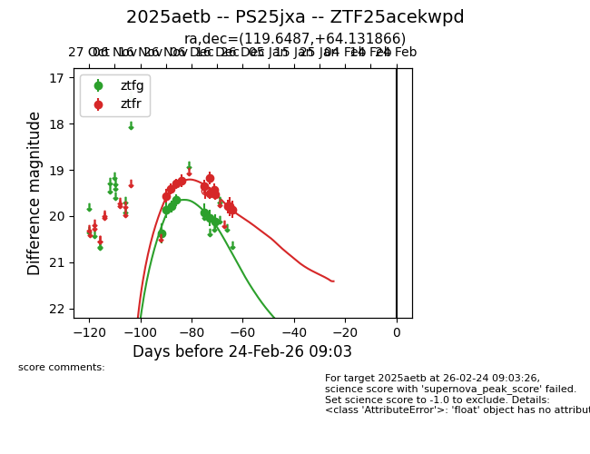
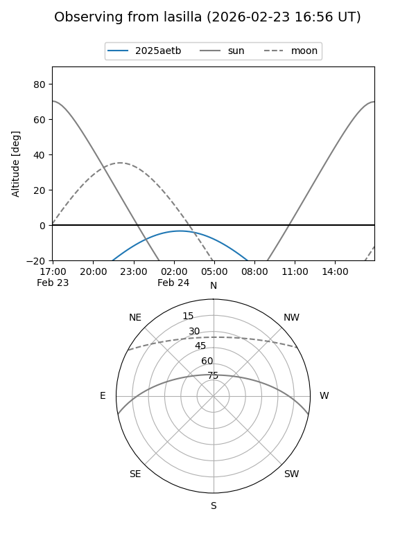
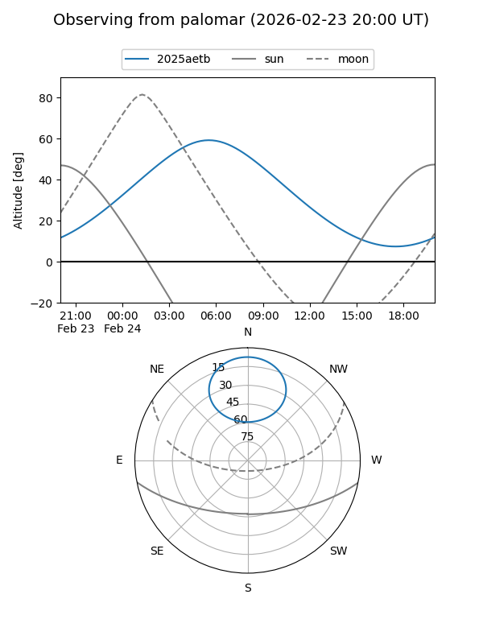
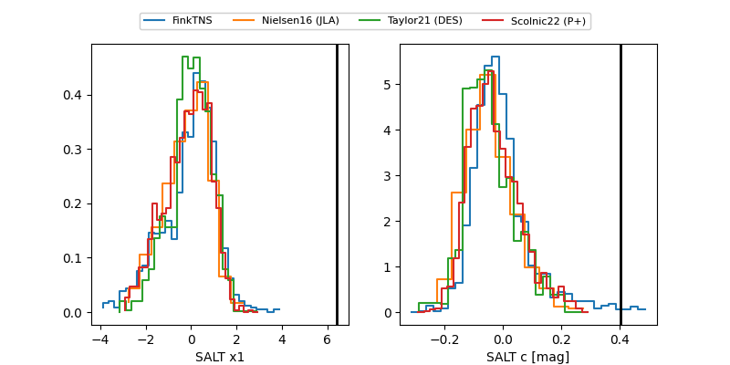

2025aetb
Target 2025aetb at 2025-12-30 07:01
Aliases and brokers:
FINK: fink-portal.org/ZTF25acekwpd
Lasair: lasair-ztf.lsst.ac.uk/objects/ZTF25acekwpd
ALeRCE: alerce.online/object/ZTF25acekwpd
TNS: wis-tns.org/object/2025aetb
YSE: ziggy.ucolick.org/yse/transient_detail/2025aetb
alt names
ZTF25acekwpd (ztf,fink_ztf)
2025aetb (tns,yse)
PS25jxa (panstarrs)
Coordinates:
equatorial (ra, dec) = 119.6487,+64.13187
equatorial (HMS+DMS) = 07:58:35.69,+64:07:54.72
galactic (l, b) = (152.2646,+31.49717)
Flags:
Photometry:
last ztfg=20.12, ztfr=19.86
7 ztfg, 12 ztfr detections
Lightcurve

Visibility


Additional plots
